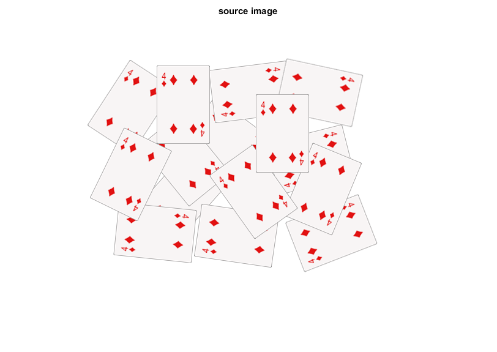
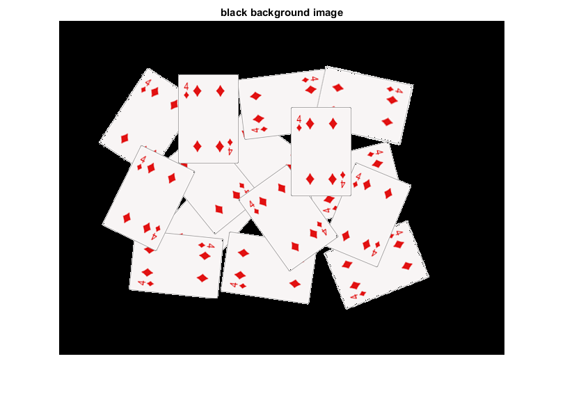
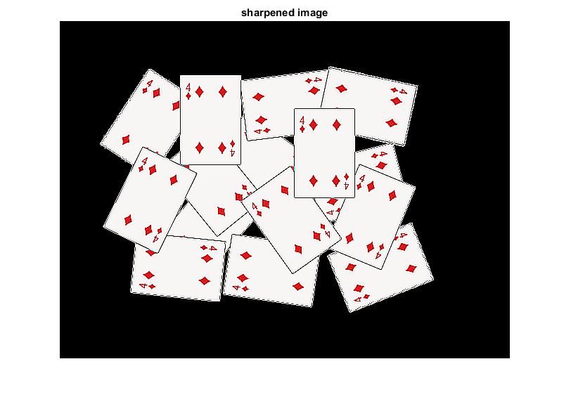
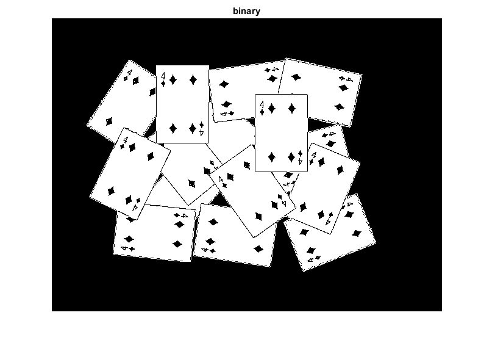
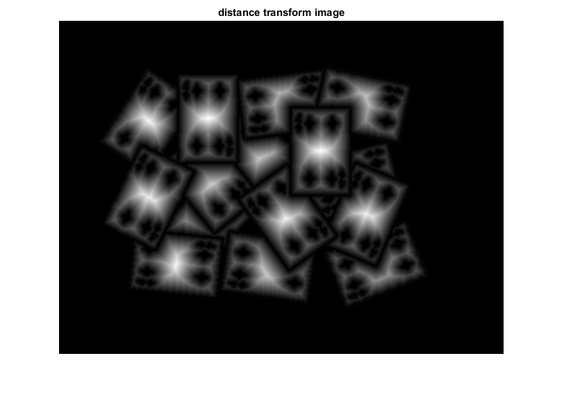
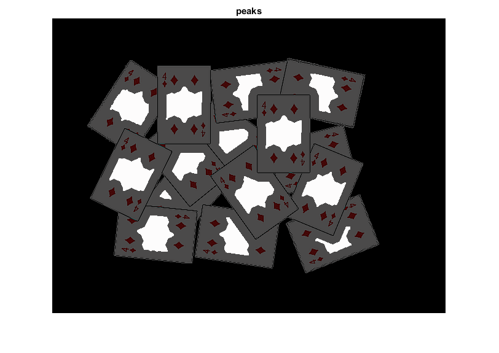
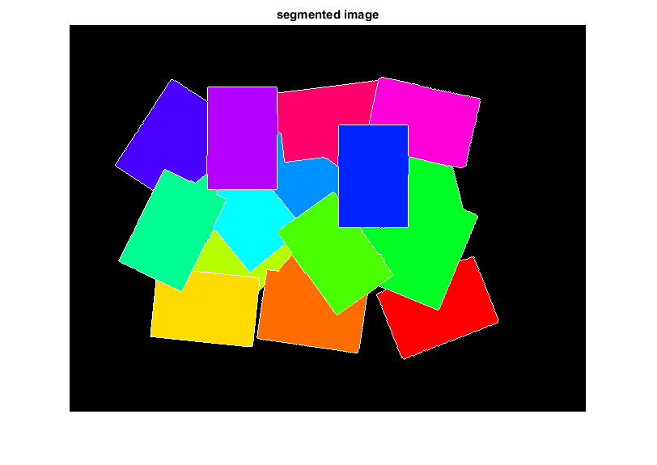

Image Segmentation with Distance Transform and Watershed Algorithm
Sample code showing how to segment overlapping objects using Laplacian filtering, in addition to Watershed and Distance Transformation.
In this demo you will learn how to:
- Use the OpenCV function cv.filter2D in order to perform some laplacian filtering for image sharpening
- Use the OpenCV function cv.distanceTransform in order to obtain the derived representation of a binary image, where the value of each pixel is replaced by its distance to the nearest background pixel
- Use the OpenCV function cv.watershed in order to isolate objects in the image from the background
Sources:
load image
fname = fullfile(mexopencv.root(), 'test', 'cards.png'); if exist(fname, 'file') ~= 2 disp('Downloading image...') url = 'https://cdn.rawgit.com/opencv/opencv/3.2.0/samples/data/cards.png'; urlwrite(url, fname); end src = cv.imread(fname, 'Color',true); imshow(src), title('source image')
change the background from white to black, since that will help later to extract better results during the use of Distance Transform
mask = all(src == 255, 3);
src(repmat(mask,[1 1 3])) = 0;
imshow(src), title('black background image')create a kernel that we will use for accuting/sharpening our image (an approximation of second derivative, a quite strong kernel)
if true kernel = [1 1 1; 1 -8 1; 1 1 1]; else kernel = [0 1 0; 1 -4 1; 0 1 0]; end
do the laplacian filtering, with intermediate calculations performed in floating-point precision (given the kernel used, Laplacian image will likely have negative values which would otherwise get truncated too soon)
if true imgLaplacian = cv.filter2D(src, kernel, 'DDepth','single'); else imgLaplacian = cv.Laplacian(src, 'DDepth','single'); end src = uint8(single(src) - imgLaplacian); imshow(src), title('sharpened image')
create binary image from source image
bw = cv.cvtColor(src, 'RGB2GRAY'); bw = cv.threshold(bw, 'Otsu'); imshow(bw), title('binary')
perform the distance transform algorithm, and normalize it to [0,1] range so we can visualize and threshold it
D = cv.distanceTransform(bw); D = cv.normalize(D, 'Alpha',0, 'Beta',1, 'NormType','MinMax'); imshow(D), title('distance transform image')
threshold distance image to obtain the peaks and dilate it a bit (these will be the markers for the foreground objects)
D = cv.threshold(D, 0.4, 'MaxValue',1); D = cv.dilate(D); imshow(D), title('peaks') if ~mexopencv.isOctave() %HACK: transparency not yet implemented in Octave image('CData',src, 'AlphaData',0.3) end
find total markers
D = uint8(D * 255); contours = cv.findContours(D, 'Mode','External', 'Method','Simple'); contours = cellfun(@(C) cat(1,C{:}), contours, 'Uniform',false); N = numel(contours);
create the marker image for the watershed algorithm and draw the markers (seed regions are marked with positive labels 1,2,3,etc. everything else 0)
markers = zeros(size(D), 'int32'); % foreground markers for i=1:N markers = cv.drawContours(markers, contours, 'ContourIdx',i-1, ... 'Color',i, 'Thickness','Filled'); end % background marker markers = cv.circle(markers, [5 5], 3, 'Color',N+1, 'Thickness','Filled');
perform the watershed algorithm
markers = cv.watershed(src, markers);
in output, pixels are assigned to regions (1,2,etc.), boundaries set to -1
L = uint8(markers); % -1,1,2,..,N,N+1 -> 0,1,2,..,N,N+1 if ~mexopencv.isOctave() && mexopencv.require('stats') %HACK: tabulate in Octave behaves differently tabulate(L(:)); % 0=boundaries, 1:N=regions, N+1=background end
Value Count Percent
0 5893 1.92%
1 8805 2.87%
2 9308 3.03%
3 9914 3.23%
4 2966 0.97%
5 10354 3.37%
6 13799 4.49%
7 11038 3.59%
8 6446 2.10%
9 4272 1.39%
10 10752 3.50%
11 9412 3.06%
12 10765 3.50%
13 9432 3.07%
14 8442 2.75%
15 175602 57.16%
show segmented objects color-coded according to labels
clr = [1 1 1; hsv(N); 0 0 0];
rgb = uint8(255 * ind2rgb(L, clr));
imshow(rgb), title('segmented image')